Осташков
Природа
Озеро Селигер
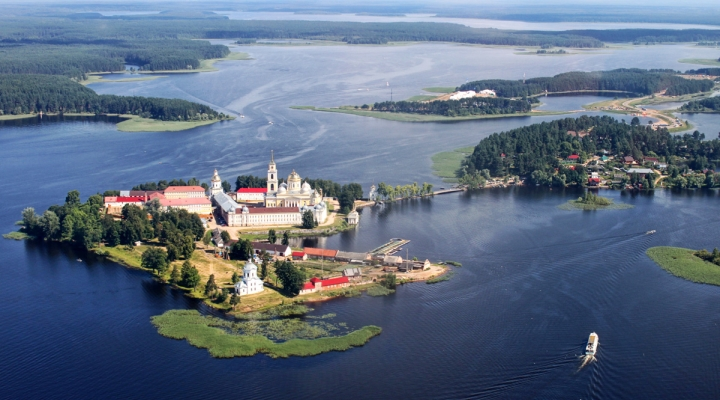 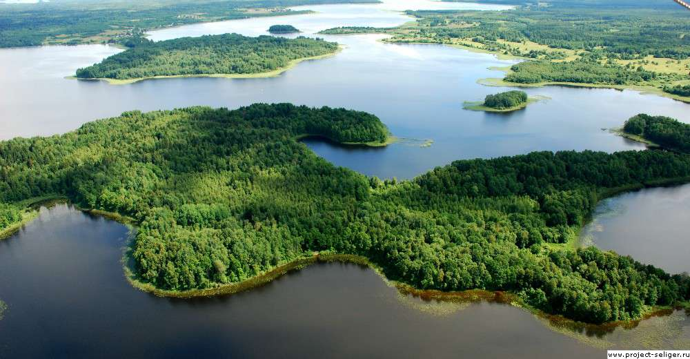Озеро Селигер с воздуха
Площадь озера 260 км².
На Селигере насчитывается более 160 островов.
Селигер содержит огромное количество притоков (около 109-112).
Озеро имеет ледниковое происхождение. Этим объясняется его своеобразная форма — это не озеро в привычном понятии, а скорее цепочка озёр, протянувшихся с севера на юг на 100 км и связанных между собой короткими узкими протоками. Береговая линия озера серьёзно изрезана.
Селигер омывает территории следующих областей: Осташковская, , Селижаровская, Березовская и другие.
В окрестностях Селигера преобладают такие млекопитающие, как лось, кабан, бурый медведь, волк, лисица. К ним также относятся заяц, белка, енот, куница, бобр, летучие мыши.
Журавль, утки, чайки, сороки и прочие обитают на территории Селигера.
Почти все берега озера окаймляет растительность: на песчаных отмелях — тростник, в заводях и заливах — камыш, кувшинки.
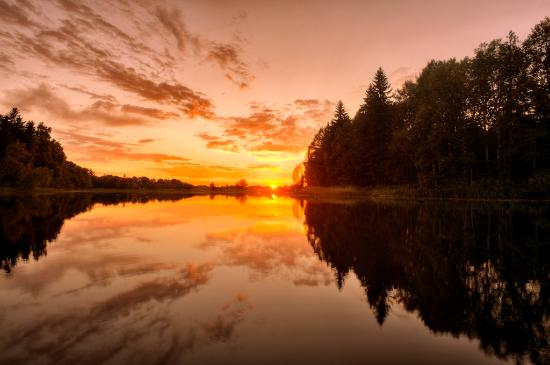 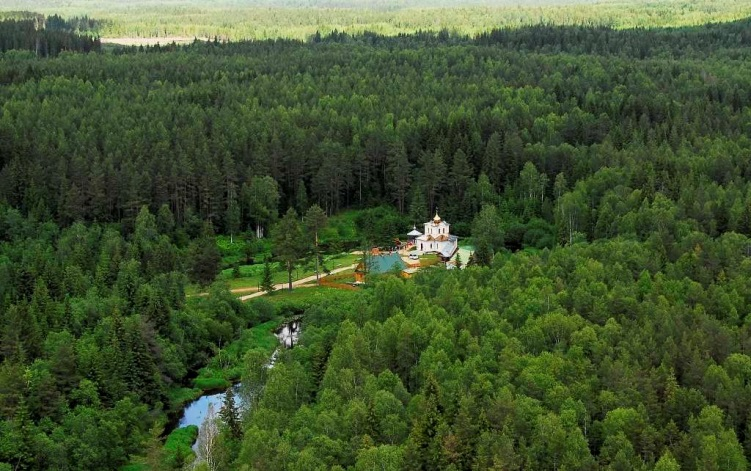Вода в Селигере отличается особой прозрачностью, достигая до 5 метров.
Климат Селигера и его окрестностей мягкий и влажный.
Основной чертой рельефа являются моренные холмы. На севере на его территорию заходит Валдайская моренная гряда, которая уступами спускается к озеру Селигер. Высокие холмы тянутся через Осташков и носят название Осташковская гряда.
Исток Волги
Именно на территории Осташковского района берёт своё начало Волга.
 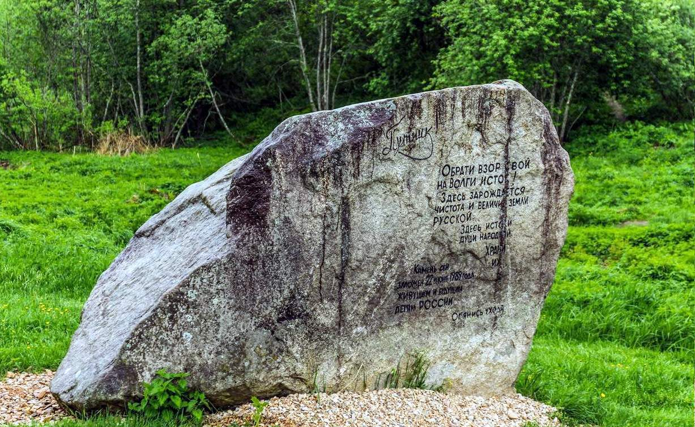
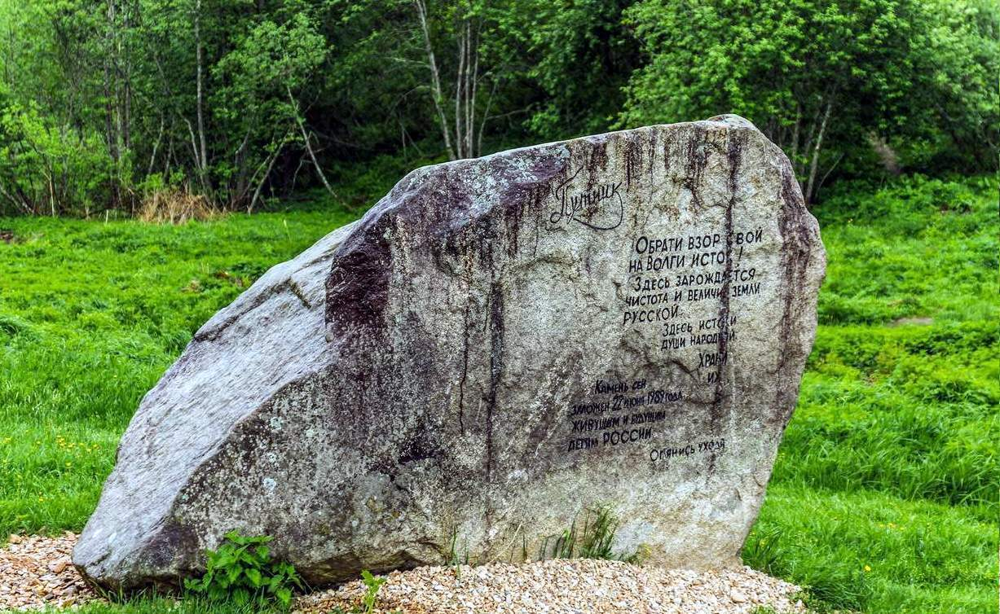
Камень у истока реки Волга – место силы
Муравьиные заказники Полновский и Селигерский
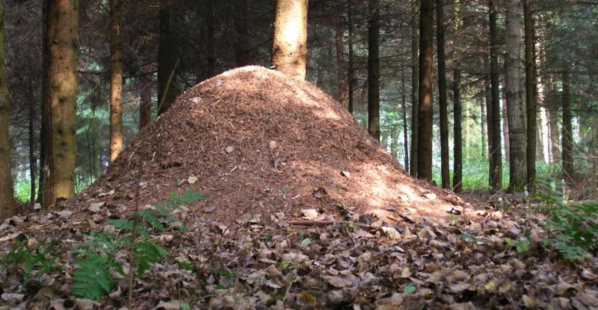 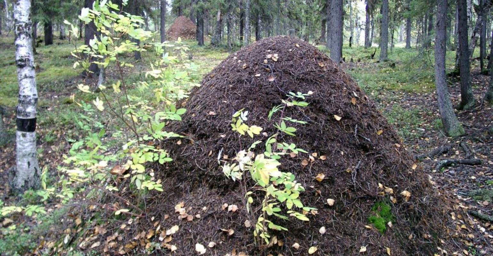 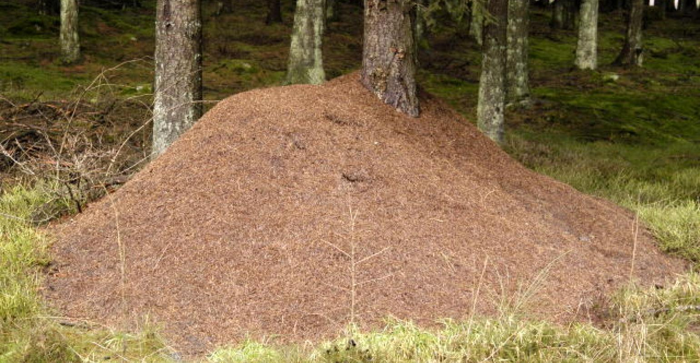Недалеко от деревень Ботово, Конец и Слобода находится изолированный лесной массив площадью более 300 га. Он включает в себя ельники-зеленомошники, в которых растёт кислица, черника и множество грибов. В этому лесу стоит более 200 муравейников. Основную массу составляют гнезда рыжего лесного муравья. Средний диаметр 2,2 - 2,5 м, а высота некоторых достигает 2 м. Всем известно, что муравьи - санитары леса, но не все знают, что человек очень сильно вредит их расселению. Это и стало основной причиной создания таких заповедных мест по всей России. «Лес здоров, если в нем живут муравьи. Не тревожьте наших с вами друзей» - гласит надпись над многими муравьиными заказниками.
Остров Хачин
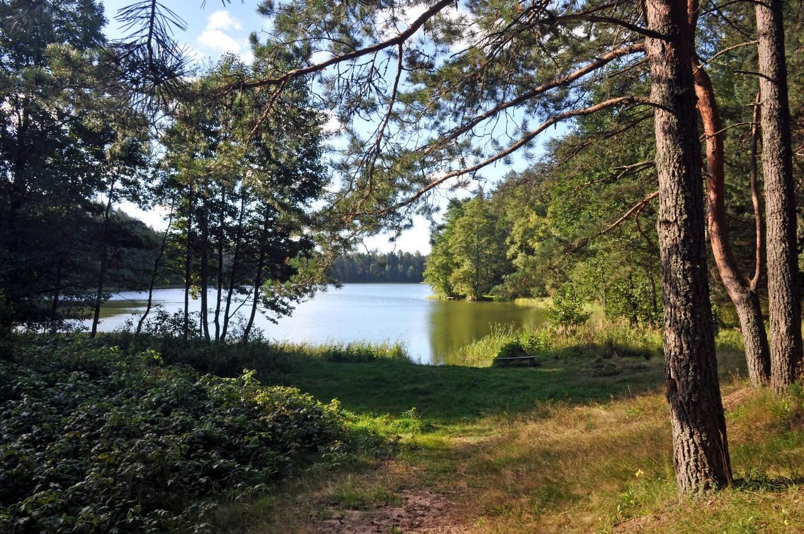Остров Хачин расположен в самом центре Селигера. Его берега сильно изрезаны, здесь масса узких и длинных бухт и протоков. Средняя протяжённость Хачина — 9 км с севера на юг и 6 км с запада на восток. На островной площади более 3000 гектаров расположилось 13 озёр: самые маленькие — по 1 га, крупнейшее — Белое-южное — площадью 35 га. У всех хачинских озёр сток, разумеется, в Селигер, но вода в каждом имеет свои особенности, благодаря чему в озёрах водятся разные виды рыб. Островной ландшафт — небольшие возвышенности, густые лиственные леса и луга. Разнообразию животной жизни Хачина вполне может позавидовать какой-нибудь национальный парк: здесь обитают лоси, кабаны, медведи, лисы, барсуки, зайцы и выхухоли, а в протоках сооружают плотины бобры. На берегах внутренних озёр можно увидеть выпь.
Оковецкий источник
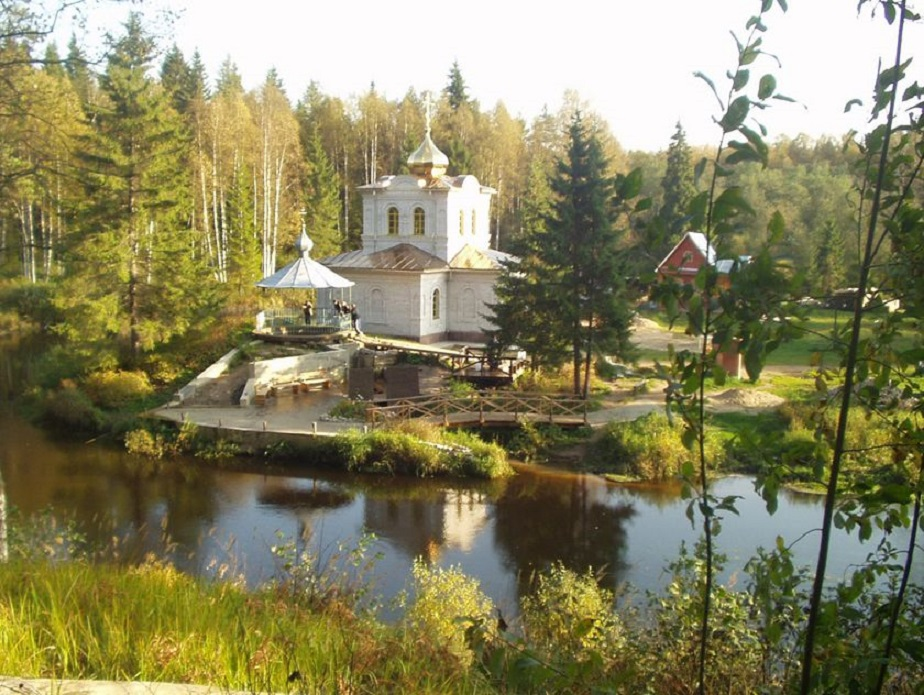Он находится на территории Спасо-Преображенского (Оковецкого) скита монастыря, который расположен неподалёку от села Оковцы. Это место связано с историей явления чудотворной иконы Богоматери Оковецкая-Ржевская. Очень интересный факт. Эта икона состоит из двух чудотворных икон - "Честного Животворящего Креста Господня" и "Богоматери с Младенцем и святителем Николаем". В связи с тем, что они были установлены на одну иконную доску, то стали называться одной иконой.
В далёком 1539 году в этих краях в лесной глуши явилась икона Честного Животворящего Креста Господня двум разбойникам Ивану и Ермолаю. Они промышляли ночами по лесам и увидели закрепленную на сосне икону. Не сразу жители деревни поверили рассказам двух ненадёжных людей, но, когда отправились на указанное место, то действительно обрели икону Креста Господня. Вторую же чудотворную икону Богородицы сначала не заметили. Однажды, в день праздника жители деревни Клочки отправились поклониться иконе Креста Господня, поскольку они много слышали о ней. Увидели, поклонились, но налетел ветер, набежали тучи, стало темно и вдруг инок Стефан увидел вторую икону Богородицы с Младенцем и Николаем Чудотворцем. Так была обретена эта икона.